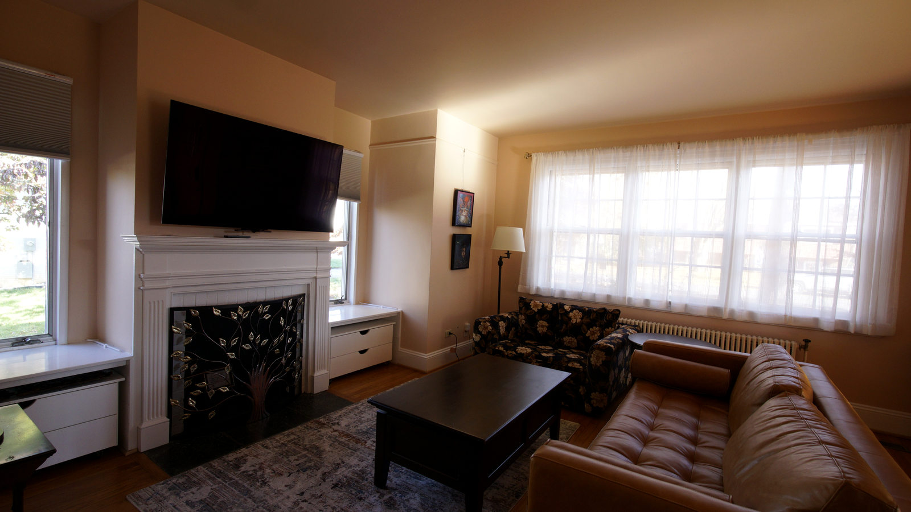
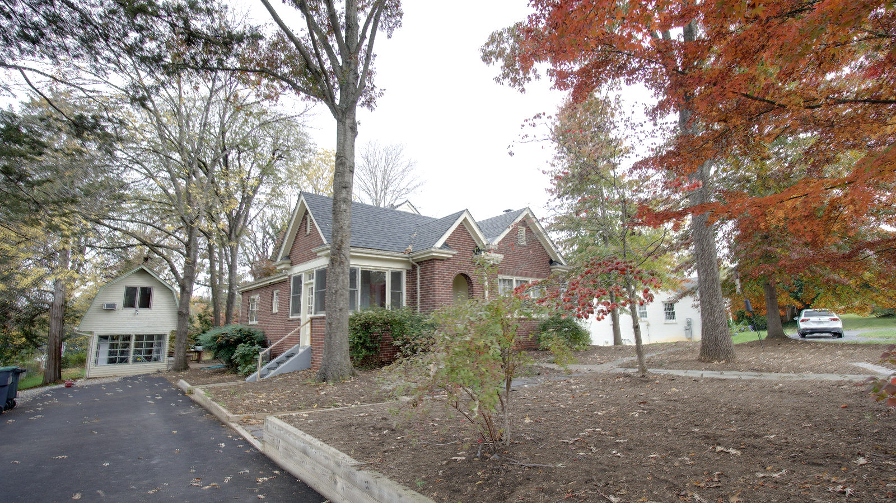
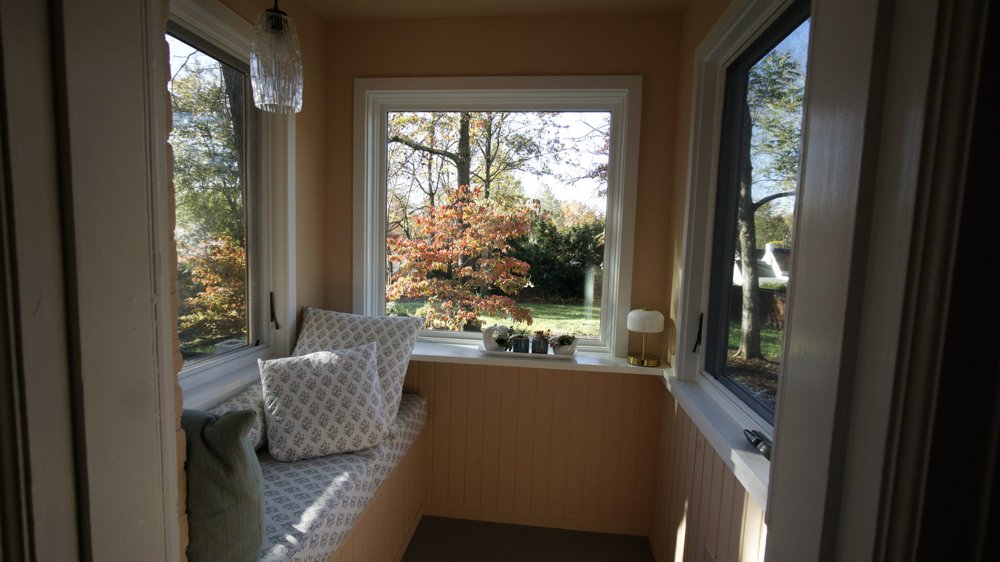
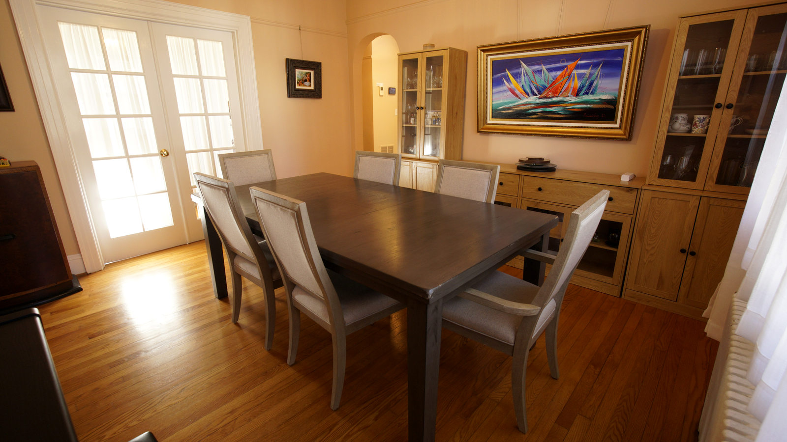
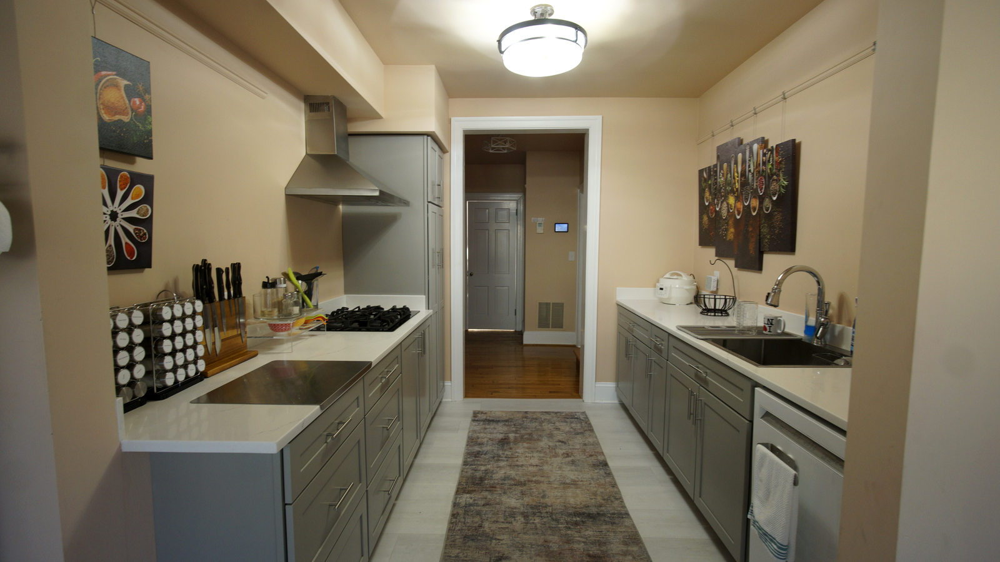

The Living Room
A fireplace, tall windows and a place to settle in.
A Charlottesville Cottage Since 1939
A little house with a long history, hidden corners, and stories to tell.

“It just has more house than you expect!”
From the light-filled living room to the tucked-away reading nook, Sunderland reveals itself one room at a time.

A fireplace, tall windows and a place to settle in.

A favorite little corner for watching the seasons change.

Gathering spaces and doorways that lead to another surprise.

Bright, practical and full of stories still to tell.
A house dating to 1939, with additions, quirks, discoveries and a growing collection of true stories.
Our first illustrated House Tour is ready to explore. Garden paths, the Studio and the stories behind them are coming next.